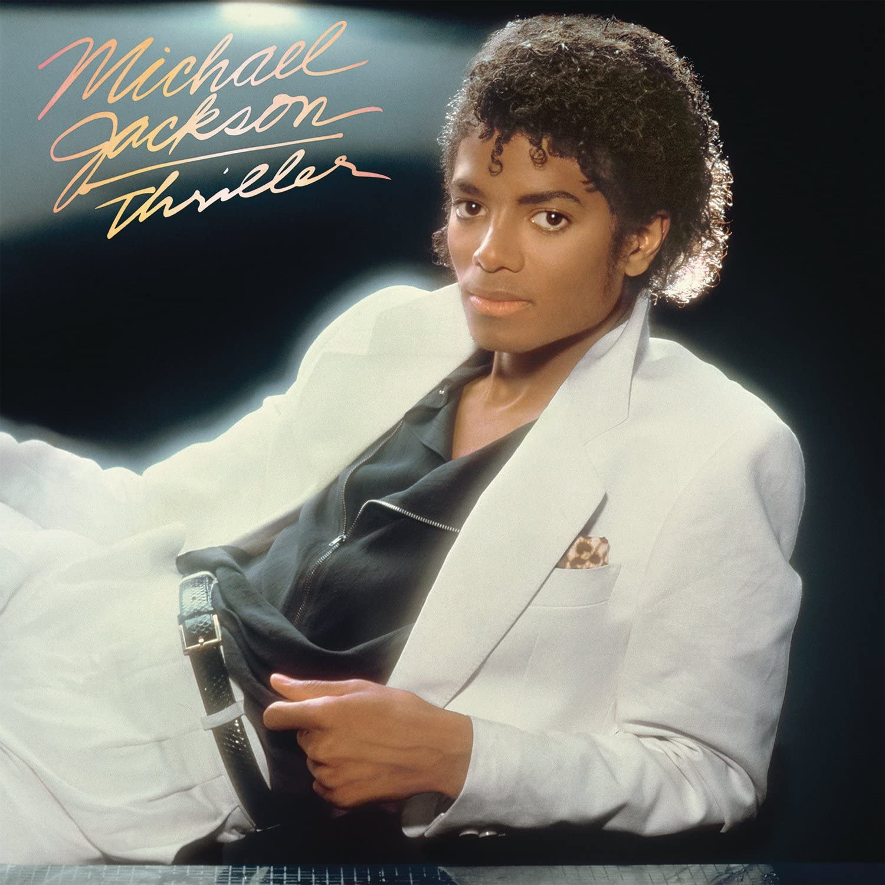
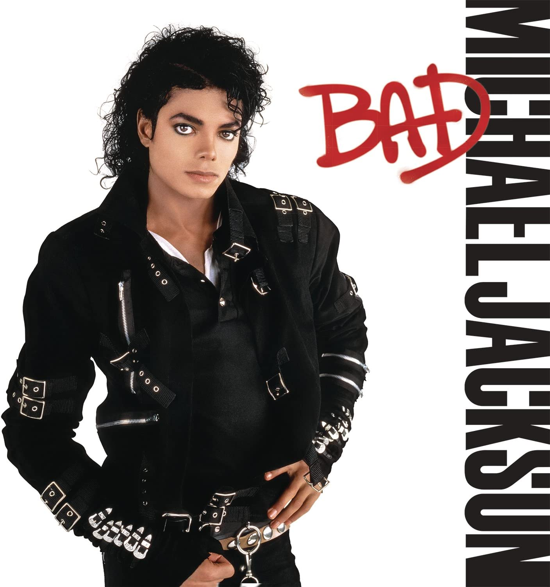
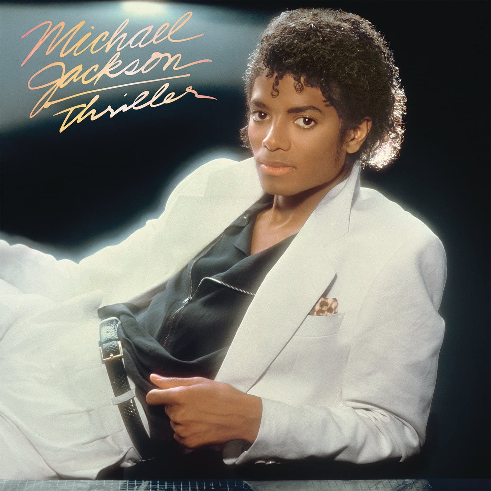
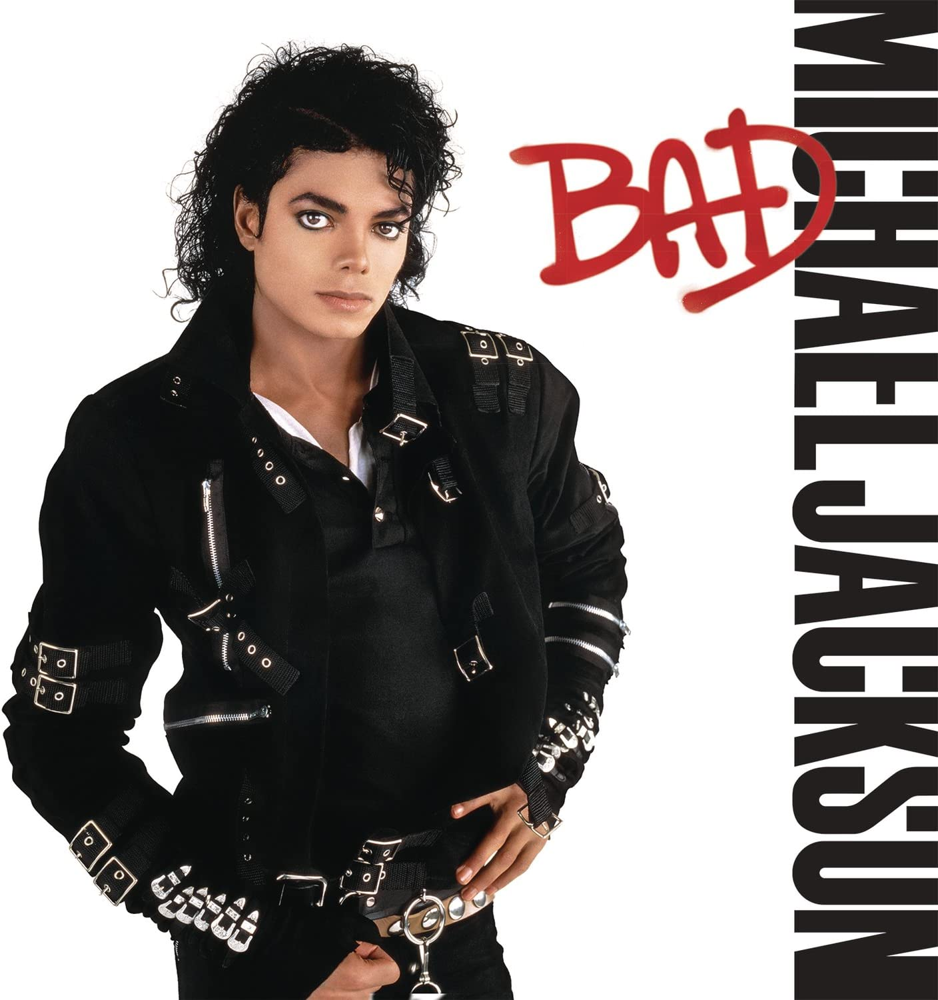

Thriller
1982
65 Millones de copias

Bad
1987
35 Millones de copias

Biografía: |
Michael Joseph Jackson (Gary, Indiana, 29 de agosto de 1958-Los Ángeles, 25 de junio de 2009) fue un cantante, compositor, productor y bailarín estadounidense. Apodado como el «Rey del Pop», sus contribuciones y reconocimiento en la historia de la música y el baile durante más de cuatro décadas , así como su publicitada vida personal, lo convirtieron en una figura internacional en la cultura popu lar. Su música incluye una amplia acepción de géneros como el pop, rhythm and blues (soul y funk), rock, disco y dance, y es reconocido como el «artista musical más exitoso de todos los tiempos» por los Gui nness World Records. |
Géneros Musciales: |
Canción más Escuchada: |
Discografía: |
 |
Thriller |
1982 |
65 Millones de copias |
 |
Bad |
1987 |
35 Millones de copias |
|
Dangerous |
1991 |
32 Millones de copias |
Entre otros... |
Cónoce más sobre Michael Jackson |

|

|

|

|
Fecha de fallecimiento: 25/06/2009 |